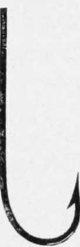
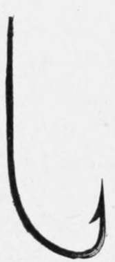
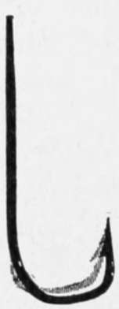
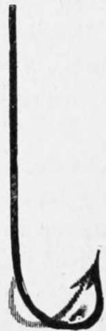
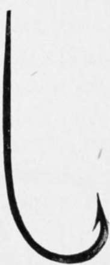
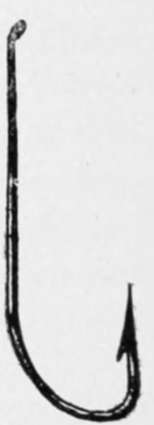
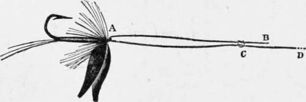
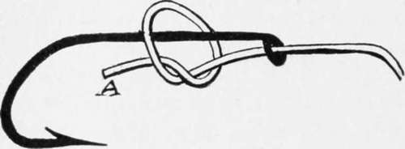
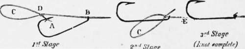
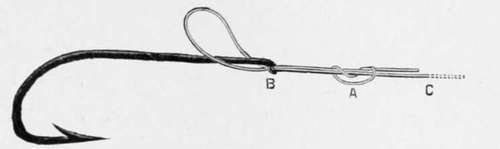

Section IV. Hooks
Description
This section is from the book "American Game Fishes", by W. A. Perry. Also available from Amazon: American Game Fishes: Their Habits, Habitat, and Peculiarities; How, When, and Where to Angle for Them.
Section IV. Hooks
The selection of the best hook for "all-round" fishing is more difficult than at first appears. Experience alone teaches the make to be depended on in the majority of cases. And
Aberdeen.
Dublin Limerick or O'shaughnessj.
Kendal Sneck.
Carlisle.
Sproat.
Turn Down and Limerick.
Fig. 10.
the experiences of anglers differ just as widely as do their scenes of operation. One man swears by the O'shaugh-nessy, and his neighbor by the Sproat; both are justified by their experience. It is only after gathering the consensus of opinions and reinforcing this by studious experiment that one is entitled to speak authoritatively. I have done this carefully, and here declare that, at the time of writing, the "Dublin-Limerick", or "O'shaughnessy", at present is the best all-round hook, followed closely by the "Sproat" bend of hook.
In order to make plain this matter of shapes to the uninitiated, I give, in fig. 10, the different kinds chiefly used in fresh water, as manufactured by Allcock, of Redditch-the largest tackle-maker, in the world.
The process of manufacture has been so often described that I do not think it is necessary to here again repeat it. Those who are curious on the subject will find it described at length in my book, "Fishing-Tackle-Its Materials and Manufacture" (Ward, Lock & Co., 33 Bond-st. New York).
Of all the shapes of hooks, as I have said, the Dublin-Limerick is the nearest to perfection; and personally, I prefer this hook, eyed with the bashful turn-down eye, as shown. The eve obviates the tying on of a snell, of course, and it has this supreme advantage: when the gut is at all worn or frayed, it is not necessary to discard the hook. All you have to do is to cut off the gut and re-tie. This advantage is patent to everybody.
This section would be incomplete if I did not here pause and tell how to tie and re-tie the knots referred to. There are four really good ways of tying, but on the whole I prefer fig. 12. It is the one I always use myself, and has never drawn or failed me in any way. I do not say the others are not good, but my experience declares for this one.
Fig. 11 is thus tied: Take the fly by the bend, in the position shown, with the eye turned upward. Pass two or three inches of the end of the leader (B), previously well moistened, through the eye (A) toward the point of the hook; and then, letting go of the fly, double back the gut and make a single slip-knot (C) round the center line (D). Next draw the slipknot tight enough only to admit of its passing freely over the hook-eye (A), then run it down to and over the said eye, when, on gradually pulling the central link (D) tight, the jam knot is automatically formed. Cut off the end of gut, and you have a knot which will not draw, or allow the hook to hang hinged, loosely, as it were.
Fig. 11.
Fig. 12 is far less intricate, and explains itself. Take care to pull the end (A) as tight as you can get it. Then draw it down to the eye, giving a good pull to fix it.
Fig. 12.
Fig. 13.
Fig. 13 is thus described: First stage, pass the end of the line (A) through the hook-eye (B), and run the hook a few inches up the line, out of the way; then make a running noose (C) with the slip-knot (D), and draw the said knot as tight as possible. Second stage: Run down the hook again to the position shown in first stage, and passing the noose (C) over it, pull the line (E) quite tight, cutting off the spare end. This completes the knot, and it appears as shown in third stage.
In fig. 14 we have an exceedingly useful knot where additional strength appears necessary-if indeed further security can be added to the foregoing. Salmon fishermen prefer this knot, if only because it looks surer-and it is possible, on second thoughts, that it is so in reality, because of the greater ratio in the size of the hook.
It is thus tied: Take the hook by the bend, between the finger and thumb of the left hand, and with the eye turned downward, in the position shown in the diagram; then-the gut of course having been well softened-push the end a couple of inches or so donni through the eye (B) toward the point of the hook, then pass it round over the shank of the hook, and again from the opposite side downward through the eye, in a direction away from the hook-point (the gut-end and the central link will now be lying parallel) ; make the double slip-knot (A) round the central line or link (C), and pull the said knot perfectly tight; then draw the loop of gut together with the knot (A) backward (toward the tail of the fly), until the knot presses tightly into and against the metal eye of the hook (B), where hold it firmly with the forefinger and thumb of the left hand, whilst with the right hand, the central link is drawn tight, thus taking in the slack of the knot. Cut off the end and the knot is finished.
To tie a double slip-knot: make a single slip (see a, fig. 15) and before drawing it close, pass the gut-end (B) a second time round central link c, and then again through the loop (a), then the knot will be like (A) in fig. 14. To finish, pull the end of the gut (C) gradually, and at last very tightly
Fig. 14.
-straigJit azuay in a line that is with the central link (C).
Continue to:
- prev: Section III. Waxes, Varnishes, Line-Dressings And Stains
- Table of Contents
- next: Section V. Fly-Fishing